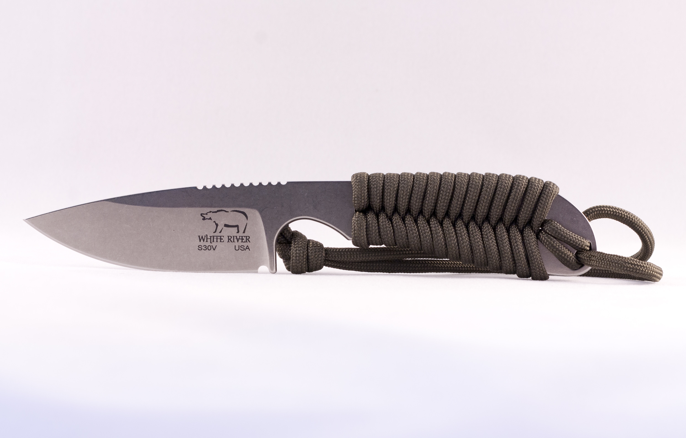
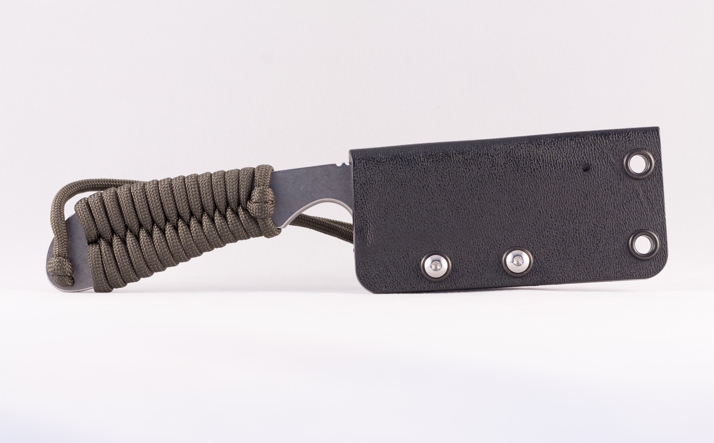

White River Knives Backpacker


The BackPacker is an extremely versatile, tough (S30V) and light weight knife. A 'cross over' knife, it is well suited for hiking, hunting, tactical and more. The handle is wrapped in paracord for lightweight comfort and grip.
- Designer: White River
- Action: Fixed Blade
- Blade Length: 3.25"
- Blade Thickness: 0.096"
- Overall Length: 7"
- Paracord Wrapped Handles
- Blade Steel: S30V (58-60HRC)
- Weight: 2.4oz
Product ID: backpacker
*Information courtesy of White River Knives.